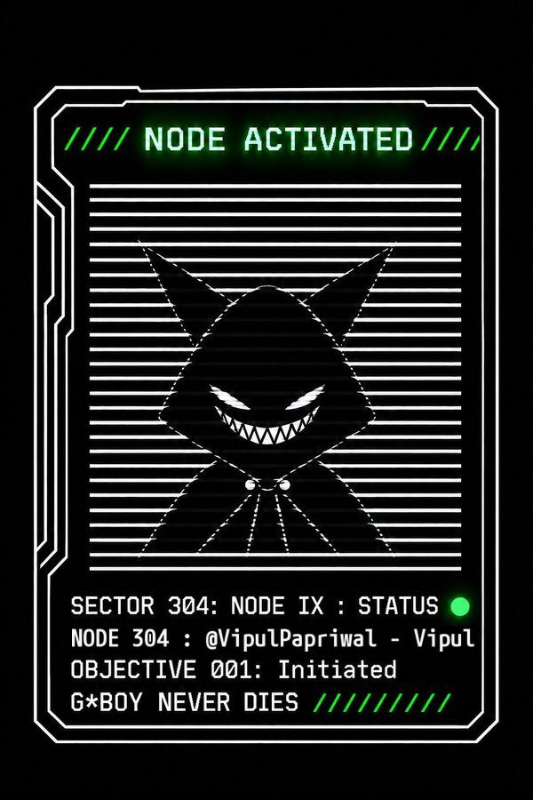
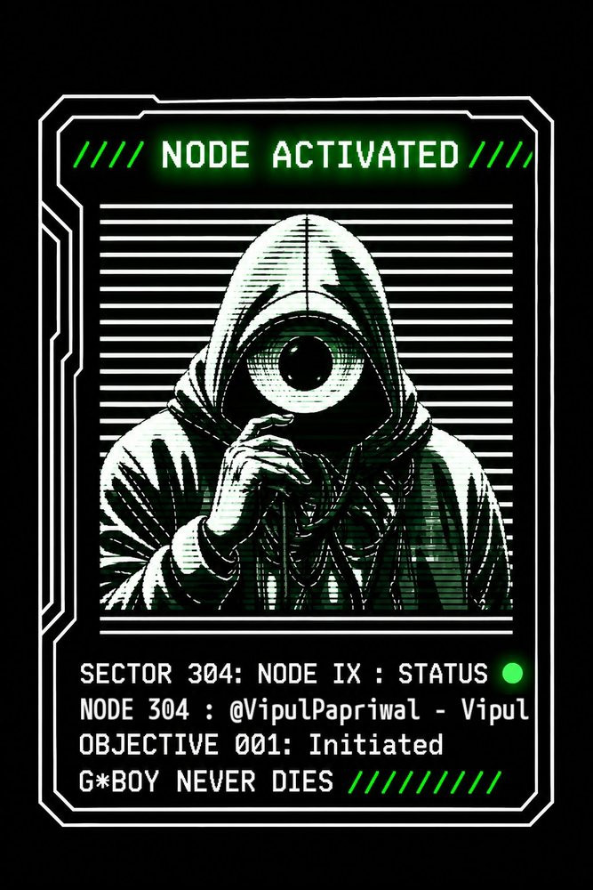

A daily, source-checked reading of the Bhagavad Geeta as a practical life manual.
Pictures for this account are still being added.
Portfolio · Indore, India
Visual + narrative architect.
I make pictures and stories, and I help communities hold them — including in Web3. I direct a small studio of AI agents the way a showrunner directs a crew: I set the idea, the rules and the look; they draft; nothing goes out without my yes.

Community · G*BOY and Neuko (iii)
I’m an active community member in the G*BOY / Neuko world, known there as NODE 304. I don’t just follow the lore. I make things inside it.
I took a raw AI clip and directed it into a finished, branded cut: a glitch title, a colour grade, an original 96 BPM score, captions and an end card. I also designed “node activated” cards that put my own characters into the story’s visual language. A knitted G*BOY piece belongs with this section and will sit here once the file is in.
Following an alternate-reality story closely means reading clues carefully, and telling real signals from fan noise — and from scams. Community safety is part of the work.


Community fan work. Neuko and G*BOY belong to their creators. This is not official Neuko work, and I’m not on the team.
Community · Solana
I’m finding my place in the Solana community, with Superteam India as a direction I want to grow in.
I don’t have a shipped Solana product to show yet. The community craft is already there in my Neuko work, which began as a Solana project. This section is a direction, not a list of prizes.
X accounts · pictures
Each account has a job. Several of the pictures belong to a series called democraZy.exe — images about power, perception, and the stories we live inside.
A daily, source-checked reading of the Bhagavad Geeta as a practical life manual.
Pictures for this account are still being added.
Quiet tools for mind and mood — breath, noticing, and habit. Not medical advice.
Pictures for this account are still being added.
The main studio: pictures, stories, and a red-hooded figure who keeps turning up.
Pictures for this account are still being added.
Indian stories and symbols, drawn back into everyday attention.

The messy twin. Experiments and pictures that don’t need a tidy box.
Pictures for this account are still being added.
About · experience

I’m an artist who builds with AI agents. I spent the last stretch building my own creative practice and learning that craft hands-on. This site is what came out of it: community work, a set of public voices, and a lot of pictures.
Before that I worked in customer support at Teleperformance, which taught me to stay calm, listen first and explain clearly. I still use that every day with communities and clients.
A value I keep
ahimsa · nobody hurts nobody.
Experience
Self-directed. I run a small AI-agent studio for art and publishing, the eBhagavadGeeta series, and community work in the G*BOY / Neuko world.
Indore. Customer communication, listening first, staying calm under pressure.
Self-taught from a zero budget: one projector, one HDMI cable, free software (MapMap).
Skills
Contact
A role, a freelance project, or an art piece. Write to me, or start from my Linktree — every public door is there.
veeepulll@gmail.com linktr.ee/vipulpapriwal